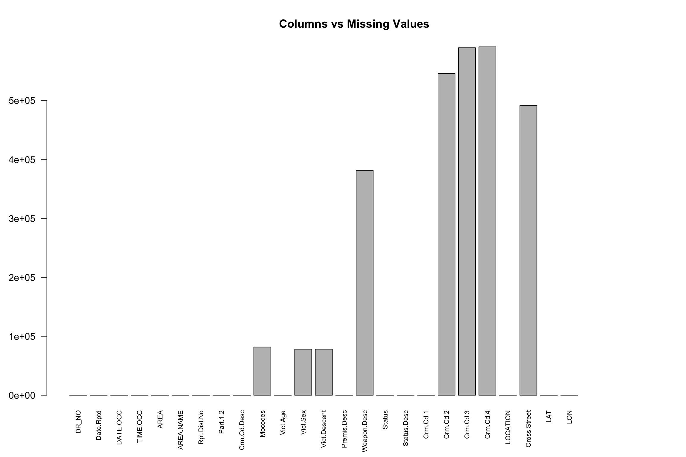
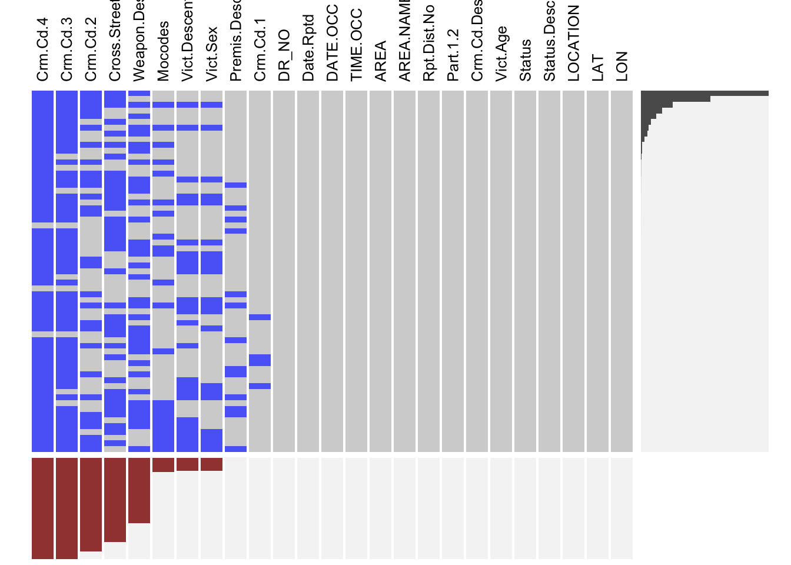

Chapter 3 Data
3.1 Sources
For this project, our group has agreed upon using data analysis to draw useful insights into public health and safety issues that is common to our daily life. After searching for available data on government websites, we have found three candidate options: a Cause of Death Data, a NYPD Shooting Incident Data, and finally LA Crime Data. After looking into the Cause of Death Death Data, we have realized that it was not raw first-hand data collected by the organization; instead, it was a cleaned table combining data from multiple sources. Thus, we have decided not to move forward with it. Next, we looked into NYPD Shooting Data and found that although this data is first-hand and provided in original form, we found that there are only a few columns that we are interested in and can be used to aid our analysis. Thus eventually, we decided to go with LA Crime Data.
LA Crime Data contains all the crime recorded in LA metropolitan area from 2020 to Present. It is provided by Los Angeles Police Department and hosted on Los Angeles Open Data. The data is transcribed from original crime reports that are typed on paper and it might cause some inaccuracies within the data. However, given the size of the dataset: more than 600K rows, the minor inaccuracies of the data will not have large impact on our analysis. It is available in CSV file, RDF file, JSON file, and XML file. Of these different file formats, we chose CSV because it is the most commonly used format.
The crime data from 2020 provided statistics about multiple aspects about all kinds of crime events in a total of 28 columns. A selection of the important columns and their respective description is listed below:
DATE OCC:
Date that the crime takes place
TIME OCC:
Time that the crime takes place
Crm Cd Desc:
The type of crime commited.
Vict Age:
Age of the Victim
Vict Sex:
Sex of the Victim
Vict Descent:
Descent of the Victim
Weapon Desc:
Description of the weapon used in crime
Status:
Status of the crime case
Premis Desc:
Setting of the crime scene
Location:
Street address of the crime incident
Area:
The 21 community police stations in LAPD
3.2 Cleaning / transformation
Our data is stored ready to use in a csv file; therefore, we simply just use the read.csv function to import our data set from file and store it in our environment. We do not have to do a lot of cleaning before we start our analysis; however, there are a few columns that we will need to remove beforehand. After taking a detailed look at the columns of the data set. We have found three columns with codes that have their encoded message stored in a different column in the data set. For example, column ‘Crm.Cd’ only contains the code ‘121’. In order to know that the crime committed in this case is ‘rape’, we need to consult column ‘Crm.Cd.Desc’. Therefore, it would be redundant and useless to store both of these columns in our table, given that we can use the readily decoded message in our analysis directly. Thus, we have made the decision to drop these three columns containing codes: {Crm.Cd, Weapon.Used.Cd, Premis.Cd}. We now end up with a table of 25 columns.
Note: In the next section, after we performed the missing value analysis, we have decided to drop three more columns, but it will be covered in detail in the later section.
3.3 Missing value analysis
## DR_NO Date.Rptd DATE.OCC TIME.OCC AREA AREA.NAME
## 0 0 0 0 0 0
## Rpt.Dist.No Part.1.2 Crm.Cd.Desc Mocodes Vict.Age Vict.Sex
## 0 0 0 81768 0 78158
## Vict.Descent Premis.Desc Weapon.Desc Status Status.Desc Crm.Cd.1
## 78163 271 381302 0 0 6
## Crm.Cd.2 Crm.Cd.3 Crm.Cd.4 LOCATION Cross.Street LAT
## 545672 589309 590788 0 491603 0
## LON
## 0
We used sapply with function to count the number of NAs in each column and graphed the columns using a bar chart. Columns {Crm.Cd.2, Crm.Cd.3, Crm.Cd.4} have a significant number of values missing. The large number of missing values in these three columns are resulting from the fact that the majority of criminals are guilty of a single crime offense. There is very few criminal who commits more than one crime in one offense. Therefore, we decide to drop these three columns for our data analysis project in order to generate analysis on a more general pattern. For other columns that have missing values, we will keep the NAs, but we will not draw conclusions that rely heavily on the NA values of these columns.

Similar to what the previous graph has shown us, we are seeing a significant number of row missing from Crm.Cd.4, Crm.Cd.3, and Crm.Cd.2. Also, we are seeing that the columns of victim descent and victim sex are having the same missing pattern. We can safely deter that availabitiy of different information about the victim is highly correlated. If the victim’s sex is not on file, then its descent will not be on file, and vice versa. Therefore, keeping all these columns with missing values and their relative patterns in mind. We will be able to generate more thorough, unbiased findings without any interference caused by missing data.